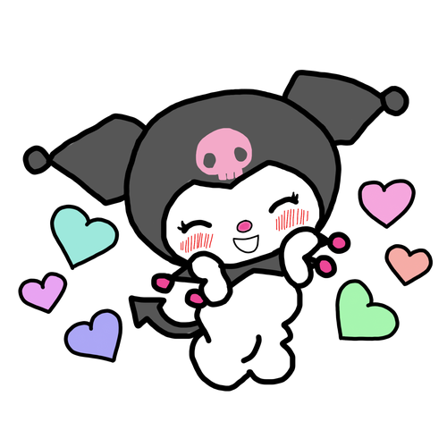
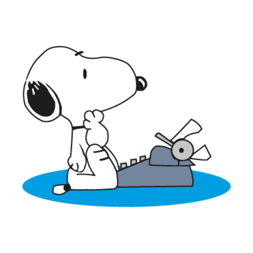
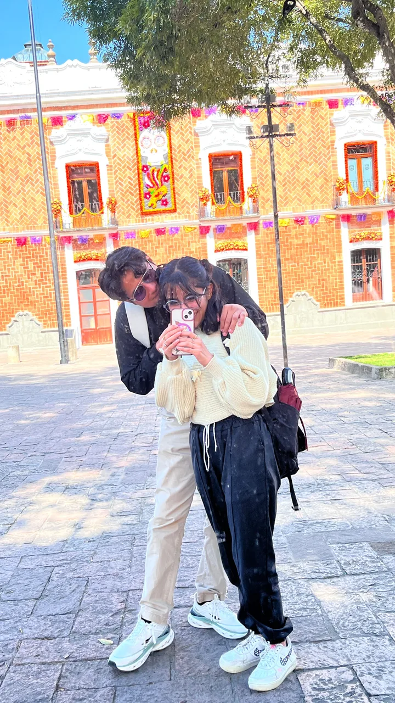
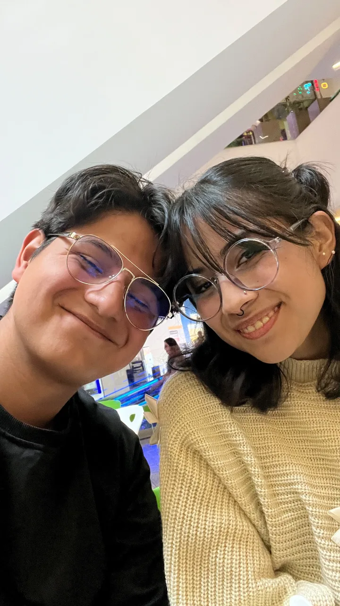
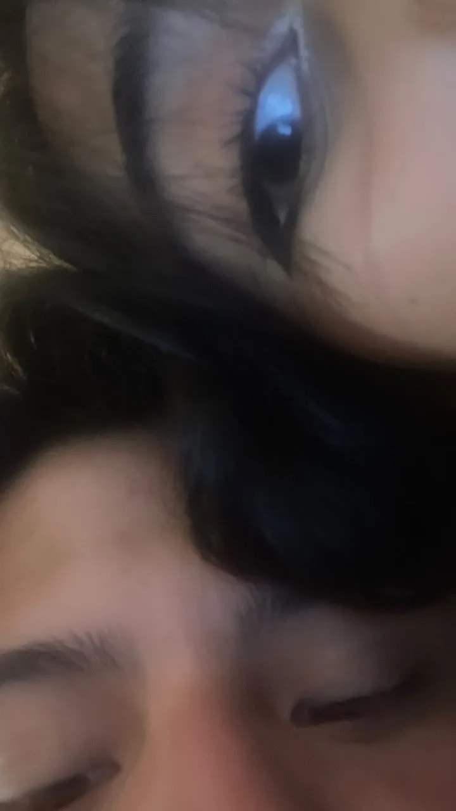
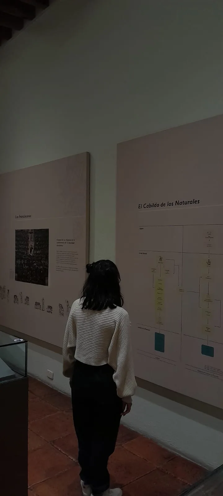

27 octubre 2026Burbujas en Vértice
📍 Tlaxcala
- Comimos
- Una tortita y tostadas de una tiendita cerca de su U
- Lugares
- Su universidad, la iglesia, el centro y el parque Vértice
- Ella llevaba
- Pantalón negro, el suéter crema de moñito que amo, dos chonguitos y tenis blancos (matcheamos colores ese día)
"Se te ve muy bonito el reloj." — Daniel
Lo que pasó
Llegué a su uni temprano, ella salió y fuimos a la biblioteca, como es costumbre. Hablamos de unas cosas y jugamos un ratito en lo que esperábamos sus materias. Después de la primera fuimos a comprar el desayuno: pedí una torta de carne enchilada y ella pidió una tostada de pollo. Las guardamos para comer en la biblioteca, pero cuando llegamos nos dijeron que no se podía comer porque tenían cámaras y los regañaban.
Se fue a su clase y estuve esperando a que saliera. Salió con la excusa de ir por sus lentes y con eso se salió de la uni. La seguí de cerquita, con cuidado de que sus compañeros no me vieran, pero lo suficientemente cerca para cuidarla si algo pasaba. Llegamos a Vértice, saqué los cigarros de burbujas que me dio, ella preparó la mezcla y grabamos cómo soplábamos burbujas. Saqué un jueguito para armar con ella en las banquitas, aunque no pudimos porque se me olvidaron las instrucciones, y le regalé mi reloj favorito, uno pequeño café con dorado. Curiosamente los relojes normalmente no le quedan, pero ese le quedó muy bien.
De ahí fuimos a la iglesia. Estuvimos poco tiempo, pero fue para poder decir de manera indirecta que te amo y que me quiero casar contigo, Linn. Después fuimos al centro, hablamos un ratito, compré un agua y fuimos a buscar un lugar con actividades que nos recomendó una amiga de ella, pero peleamos en el camino. La abracé, le expliqué, lo arreglamos y le pregunté cuál había sido su parte favorita del día; me respondió que soplar burbujas fue muy lindo. Seguimos buscando el lugar y, cuando creímos que lo encontramos, la señora nos dijo que no era ahí y nos dio la dirección, pero por la pena ya no fuimos y nos regresamos.
Nos fuimos en la combi. Estaba llena; ella se sentó de un lado y yo en otro. Quería sentarme con ella y sentía feito que el día acabara y no pudiera estar juntito a ella esos últimos momentos. La señora que iba a mi lado se bajó y Linn se pasó a mi lado. La abracé, hablamos, llegó a su casa, se bajó y se despidió, y seguimos hablando. En la noche tuve mi cita con mi psicóloga, y muchas de las cosas que me dijo me van a ayudar a ser mejor y a arreglar esto.
También le confesé que juré ante Dios que no iba a volver a fumar ni a tomar, que iba a dejar todos mis vicios para estar con ella, que le entregaba mi vida y que daba todo lo que tengo y llegue a tener para volver a estar bien con ella. Le pedí disculpas por varias cosas y dormimos felices en llamada. Le dije que la amo, me dijo que me ama, le mandé un besito y ella respondió con otro. Dormimos, y esa fue nuestra tercera cita.
Con mucho amor, Daniel. Vamos a arreglar esto, mi niña; hoy vimos que somos un gran equipo. Te amo 🖤

Memorias de videos
Fotos extra



